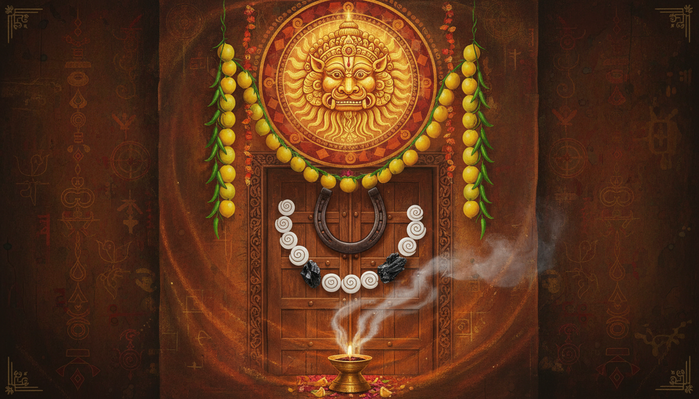

1. Introduction: The Unexplained Shift
In the sophisticated social landscapes of the modern world, we often witness a subtle yet undeniable shift in the pranic field. You may have experienced it: a newborn, previously peaceful, begins to cry inconsolably; a business that enjoyed a high-visibility launch suddenly hit an inexplicable plateau; or a persistent, heavy headache descends immediately following a social gathering.

In Vedic tradition, these are not mere coincidences but the tangible effects of Buri Nazar (the "bad gaze") or Drishti Dosha. This phenomenon is rooted in the principle of bandhu—the inseparable connection between the individual microcosm and the universal macrocosm. Human attention is not a passive sensory reception; it is an active, directional projection of pranic energy. When this energy is fueled by intense envy, or even by excessive, unexpressed admiration, it can puncture the recipient’s subtle defenses, creating a localized energetic imbalance.
MEDICAL DISCLAIMER: If you are experiencing persistent or severe physical symptoms—such as sudden vomiting, chronic headaches, vision changes, numbness, fainting, or chest discomfort—you must consult a qualified medical professional immediately. The remedies provided in this guide are traditional and spiritual in nature. They are intended to support energetic well-being and are not a substitute for professional medical diagnosis, advice, or treatment.
2. The Anatomy of a Gaze: Metaphysical Mechanics
Metaphysically, Drishti Dosha operates by disrupting the manomaya-kosha (the mental body or sheath). While we often focus on the physical body, Vedic science identifies four primary layers of the aura: the Physical, Mental, Emotional, and Spiritual. Human intention carries "pranic weight." When an observer focuses on your prosperity or vitality, they project a concentrated stream of energy that can create blockages in the seven main chakras.
It is a common misconception that Nazar requires malice. Even well-meaning individuals can unintentionally cause a "dosha" through concentrated admiration. This disruption restricts the flow of prana, leading to a depletion of the recipient's auric resilience and subsequent misfortune or malaise.
3. Diagnostic Signs: Identifying the Affliction
Symptoms of Buri Nazar typically manifest with sudden onset, often following a period of success or public visibility.
Physical Signs
- Persistent headaches, neck tension, or a sense of "heaviness" in the body.
- Watery, numb, or heavy eyes and difficulty maintaining focus.
- Unexplained fatigue or feeling "drained" despite adequate sleep.
- Sudden digestive distress or nausea with no medical trigger.
Emotional and Mental Signs
- Sudden, unprovoked anxiety, restlessness, or a "dark cloud" feeling.
- Intense family quarrels over trivial matters that refuse to resolve.
- A feeling of "stuckness" or inability to make routine decisions.
Environmental Signs
- A "heaviness" in the home that visitors or residents frequently comment upon.
- Milk souring prematurely or fresh food spoiling faster than usual.
- A sequence of household appliances or plumbing systems breaking down in rapid succession.
The Vulnerability Profile
- Infants and Children: Specifically during the first 40 days, their unformed auric shields are highly susceptible.
- Pregnant Women: Their receptive fields are naturally open, making them vulnerable to absorbing external negativity.
- Those in Transition: Individuals launching new businesses, moving into new homes, or celebrating weddings.
4. Astrological Roots: Chandra Dosha and the Badhaka Framework
Your susceptibility to external energy is often written in the stars. In Jyotiṣa (Vedic Astrology), the Moon (Chandra) signifies the mind and the mental aura. Chandra Dosha occurs when the Moon is weak, debilitated (in Scorpio), or afflicted by conjunctions with Rahu or Ketu. Placement in the "Dusthana" houses (6th, 8th, or 12th) further creates auric fragility.
A professional diagnostic for obstruction is the Badhaka Sthana (House of Obstruction). Its location is determined by your Ascendant sign's modality:
| Ascendant Sign Modality | Badhaka Sthana (House of Obstruction) |
|---|---|
| Movable (Chara Rashi: Aries, Cancer, Libra, Capricorn) | 11th House from the Ascendant |
| Fixed (Sthira Rashi: Taurus, Leo, Scorpio, Aquarius) | 9th House from the Ascendant |
| Dual (Dvisvabhava Rashi: Gemini, Virgo, Sagittarius, Pisces) | 7th House from the Ascendant |
Sidebar: The Phenomenon of Deva Badha
Not all "shifts" are malefic. Cultural journalists often note Deva Badha (positive possession). Unlike Nazar, which drains the victim, Deva Badha results in increased physical strength, radiant eyes, and an authoritative voice. Mythological precedents include Arjuna being possessed by the celestial serpent Sesha to withstand Ashwaththama, or the Pandavas being strengthened by the Maruts (wind deities). Such individuals may exhibit a sudden desire for cleanliness, milk, and sweet offerings.
5. The 7 Core Home Remedies (Nazar Utarna)
Traditional rituals, or Nazar Utarna, are designed to sweep and discard stagnant energy. Note: These should be performed by an elder. The practitioner must wash their hands and legs before re-entering the home to avoid re-introducing the expelled energy.
- Nimbu Mirchi Totka: String seven chillies and one lemon on a black thread. This is rooted in the myth of Alakshmi (Lakshmi’s sister), who brings discord. She loves sour and spicy flavors; by hanging this at your door, she is satiated outside and departs, leaving the path clear for Lakshmi. Replace every Saturday.
- Rai and Salt Utarna: Hold rock salt and mustard seeds in your right hand. Move them in a circular "sweeping" motion from the head down to the toes of the affected person seven times. Throw the mixture into a fire or sink outside the home.
- Kala Tikka/Dhaga: A black dot behind the ear or a black thread on the left wrist acts as a "distraction" for the gaze, absorbing the first hit of concentrated energy.
-
Alum (Fitkari) Pyromancy: Rotate alum around the person seven times and burn it. Warning: This should only be attempted by those with high spiritual focus to avoid "energetic retaliation."
Morphic Shape Diagnostic Meaning Animal Form Energy directed through an animal medium Human Doll Active, image-based manipulation (Karani) Indistinct Mass Advanced esoteric projection -
Red Chilli and Coconut: Rotate dried chillies around the victim seven times and burn them. In a true case of Nazar, the chillies undergo "non-irritant combustion," meaning they produce no acrid smoke or coughing despite being burnt.
- Sacred Recitation: The daily chanting of the Hanuman Chalisa creates a protective shield. To address Chandra Dosha specifically, use the Beej Mantra: “Om Som Somaya Namaha” or the Nivaran Mantra: “Dadhi shankha tusharabham kshirodarnava sambhavam / Namani Shashinam somam shambor mukutbhushanam.”
- Gomti Chakra: Wrap seven chakras in a red cloth. Place them in financial lockers or the North-East corner to deflect envy from your prosperity.
6. Spatial Protection: Securing Your Environment
Protecting the home is vital, especially in high-visibility communities where "housewarming" envy is common.
- Nazar Battu & Kirtimukha: Place a Kirtimukha (Face of Glory) above the main entrance. Its fierce expression absorbs the initial gaze of every visitor. Never place it facing a bathroom.
- Ash Gourd (Kushmanda): This vegetable is "highly pranic." Hanging a whole Ash Gourd outside a new home or lighting a Kushmanda Deepam (a lamp made from a hollowed gourd) on Amavasya (New Moon) neutralizes localized negative energy.
- The Black Horse Shoe: Hang a front-hoof iron horseshoe above the door. Use the U-pattern (ends up) to retain positive energy and the Reverse-U (ends down) to shield and ground negativity.
- Weekly Cleansing: Mop floors with rock salt water (cleaning from far corners toward the door) and burn camphor every Saturday evening to clear stagnant Raja-Tama vibrations.
7. Crystals and Sacred Materials as Personal Armor
- Karungali (Black Ebony Wood): Associated with Mars and the Root Chakra, this wood converts Martian restlessness into mental clarity and provides a dense boundary against professional envy.
- Black Tourmaline & Obsidian: These stones should be kept near the main door to ground and absorb dense energy.
- Tiger's Eye: Traditionally used to deflect energy back to its source.
How to Activate: Cleanse new items under running water for 30 seconds. Pass them through the smoke of dhoop (incense) or camphor three times while reciting the Hanuman Chalisa before wearing or placing them.
8. Practical Notes for the Modern Diaspora (UAE Context)
For families in Dubai, Abu Dhabi, or Sharjah, Buri Nazar is a practical concern of "social visibility." In communities like Arabian Ranches, Dubai Hills, or Al Reem Island, success is often highly visible.
Consultant Tip: Do not wait for symptoms to appear. For housewarmings or major celebrations, implement your spatial protections (Nazar Battu, Ash Gourd) before the first guest arrives. Maintaining "energetic hygiene" is as essential as physical security in high-exposure environments.
9. Conclusion: Cultivating Domestic Stability
These rituals are not mere superstitions; they are a structured framework for managing the environmental and psychological energies that influence our lives. By integrating these practices, you move from a state of vulnerability to one of conscious protection.
Actionable Takeaway Checklist: * [ ] Weekly Saturday Ritual: Replace the Nimbu Mirchi and burn camphor in every room. * [ ] Disposal Rule: Always dispose of used remedies (salt, lemon, thread) outside the home, ideally near a crossroad or running water. * [ ] Daily Armor: Apply a daily mantra (Om Som Somaya Namaha) and wear a black thread or Karungali beads. * [ ] Sanctity Check: Ensure you wash your hands and feet immediately after performing any Nazar Utarna ritual.
If a "heaviness" persists for several weeks despite these home remedies, it may indicate a deeper karmic or environmental obstruction. At that stage, seeking a formal Pooja or consultation with a Vedic ritual specialist is the recommended path for a full energetic restoration.
Sources
NotebookLM notebook: `f4baa398-0fa3-4972-8361-b341a6f51cc9`
- Nazar / Drishti Dosh (Evil Eye): Causes, Signs & Remedies - Divine Hindu
- Dristhi - The Evil Eye - Ancient India
- Buri Nazar Remedies UAE - How to Remove the Evil Eye at Home – Divine Sansar
- Method of protection from evil-eye using salt and mustard seeds - Hindu Janajagruti Samiti
- Drishti Removal: Signs, Symptoms, and Spiritual Remedies - Sri Vishnumaya Temple
- Drishti bommai - Wikipedia
- Why Do We Hang Nimbu Mirchi? Explained - Dharmsaar
- Method of casting off the evil-eye using Alum and How to get rid of negative energy
- Brass Kirtimukha Wall Hanging for Home Entrance & Door Vastu Online - Puja N Pujari
- Karungali Mala – Evil Eye Protection Mala is a Must-Have for Spiritual Safety - Rudhvi
- Horseshoe Benefits: 7 Powerful Benefits of Keeping a Horseshoe at Home for Luck and Protection | - Times of India
- Chandra Dosha Effects, Remedies and Mantras for Chandra Dosha removal – Eshwar Bhakti
- Coconut Breaking Ritual: Shiva's Surrogate and Ganesha's Secret to Dissolving Karma
- Atharva Veda Mantra For Protection From Evil Rituals - Vedadhara
- Apamarga Achyranthus Aspera Home Remedies: Dysuria, Diabetes - Easy Ayurveda Hospital
- How to remove Nazar : r/hinduism - Reddit
- The Enduring Power of the Black Thread Anklet for Nazar: Tradition, Pr - Smith Jewels
- Significance of HANGING PUMPKIN in FRONT of the House | EVIL EYE | Prathi Udayam Manakosam - YouTube
- Can Keerthi Mukha Be Placed Inside the Home? Dos and Don'ts
- Art of Removing Drishti - Swarna Prashana
- Suttipodal- to ward off 'drishti' or evil eye | Shivam Perinkulam
- Protection against Nazar : r/ismailis - Reddit
- Casting Off Evil Eye With Simple Kitchen Ingredients - Glutlust - WordPress.com
- Drishti Dosha: Remedies and Insights | PDF | Hindu Mythology | Mahabharata - Scribd
- What If My Moon Is Weak? Understanding the Impact and Remedies
- Hanuman Mantra to Remove all Types of Bad Spirits and Fears - YouTube
- SriPedia sudarsana ashtakam - Ibiblio
- Shri Sudarshana Narasimha Navadashakshara Mahamantra - Manblunder
- Sudarshana Mantra for removal of Negativity and Evil Eye @Jothishi - YouTube
- History, Key Concept and Origin of Vedic Astrology
- Hindu astrology - Wikipedia
- Historical development of basic concepts of Ayurveda from Veda up to Samhita - PMC
- Scholars Journal of Arts, Humanities and Social Sciences A Concise History of Hindu Astrology and Indian Spirituality - SAS Publishers
- Strong Moon & Weak Moon My Observation and What Classical Texts Say : r/Nakshatras - Reddit
- Moon (Chandra Graha) in Astrology: Meaning, Effects, and Remedies - Rudraksha Ratna
- How to use Alum (Fitkari) to remove negative energy - The Times of India
- 5 Traditional Alum (Fitkari) remedies believed to remove negativity - The Times of India
- Are You Really Safe? The Hidden Power of Brass Nazar Battu & Horse Statue That Shields Your Home from Unseen Negativity - Luxeartisanship
- Harnessing Good Luck with Black Horse Shoe - Vastu Labh
- NIMBU MIRCHI – My Myth Mythology - WordPress.com
- Why hang Nimbu-Mirchi outside door? - Lemon Chilli outside Door – Eshwar Bhakti
- Nimbu-mirchi Combo – Explained! - Naagin Sauce
- Winter Melon Health Benefits, Medicinal Use, Side Effects - Easy Ayurveda Hospital
- Ash Gourd (Winter Melon), the “Cool” Vegetable: Benefits & Recipes - Isha Foundation
- ఇంటికి దిష్టి గుమ్మడికాయ | Powerful Vastu Remedy: When & How to Tie Dristi Ash Gourd at Home - YouTube
- What is Kushmanda Deepam? 7 astrological benefits of lighting the ash gourd diya
- The Unblinking Sentinel: Indicus Crossections Explores Drishti Bommai
- Drishti Bommai and Other Practices to Ward off the Evil Eye - The Verandah Club
- Brass Kirtimukha Vastu Nazar Raksha Mask - Door Wall Hanging for Home Decor
- Benefits Of Black Horse Shoe Ring
- Karungali Bracelet & Necklace: Spiritual Healing You Can Wear - Crystal Heaven
- Karungali Mala Benefits: 10 Powerful Reasons to Wear Ebony Wood - Astrowealth
- Karungali Benefits: Mystical Powers & Planet Mars Energy - Divine Hindu
- Karungali Bracelet Benefits: Does This Black Wood Really Work? - Ornativo
- Part 3 - Trees, plants and herbs used in Abhicāra
- Apamarga (Achyranthes aspera) a Lord of All Plants - iMedPub
- Apamarga (Achyranthes aspera), A Lord of All Plants - Research Journal of Pharmacognosy and Phytochemistry
- Atharva-Veda: text - IntraText CT
- What Are the Benefits of Apamarga Plant Root in Ayurveda, and How Is It Used Medicinally? - 2 answers from Ayurvedic Doctors
- Durva Grass Protects From Curses and Evil Eye - Vedadhara
- Sudarshana Ashtakam | Divine Shield for Protection, Success & Spiritual Strength | Veeramani Kannan - YouTube
- Shri Sudarshana Ashtakam with meaning ( श्री सुदर्शनाष्टकं ) - Devshoppe
- Benefits of Sudarshana Ashtakam | PDF | Shiva | Hindu Literature - Scribd
- Dr. Pillai: Coconut Breaking Ritual To Remove Karma | Vinayagar Chaturthi 2022 - YouTube
- Remove EVIL EYE, Negativity & Blockages with Ganesh Ji! #shorts - YouTube
- Why Break Coconut at Temples? Hindu Spiritual Science Explained - Jayanth Dev
- Discovering Vedic Astrology and Its Ancient Roots - Crazy Wisdom Community Journal
- Nazar Battu | Evil Eye Remedy For Home - Live Vastu
- Drishti Durga Mantra--( To Remove All Evil Eyes--Buri Nazar--Bad Intentions--Negativity )
- Remove Black Magic & Evil Eye Instantly | Ganapati Atharva Shirsha Recited by Acharya Addittya - YouTube
- Black Nazar Battu in Clay | Handcrafted Evil Eye Charm - TheJaadu.com
- Indian traditional Metal Surya Black Nazar Battu for Home Entrance Wall Henging - eBay
- Indian Nazar Battu - Etsy
- Original & Real Nazar Battu Bead - Energized to protect from Evil Eyes - Mahakaal Prasad
- ASTRODIDI Nazar Battu Raksha Kavach for Evil Eye Protection - Black
- Narasimha Mantras for Health and Wealth | PDF | Hindu Literature - Scribd
- Lord Narasimha Maha Mantra To Remove Problems - YouTube
- Kushamaand Benefits And Side Effects - Apollo 247
- ఈ ఒక్క బొట్టుతో నరదృష్టి మాయం | Nara Drishti Pariharam in Telugu for Home - YouTube
- Semecarpus anacardium Linn.: A review - PMC
- Bhilawa (Semecarpus anacardium) – Benefits, Uses, and Ayurvedic Import - everAyu
- Bhallataka (Semecarpus anacardium) - Properties, Benefits, Uses & Dosage
- Semecarpus anacardium - Wikipedia
- Semecarpus anacardium - Forrest-ecology
- Semecarpus anacardium Marking Nut Tree. Oriental Cashew PFAF Plant Database
- Warding Off the Evil Eye: The Tradition of Hanging Nimbu-Mirchi in Ind - DesiByDil
- Spice up your life with some Nimbu-Mirchi - Means 2 Madness
- Karungali And Chakra with Evil Eye Bracelet – 8mm - aathilife
- Brass Kirtimukha Wall Hanging | Traditional Vastu Wall Décor - eBay
- Brass Kirtimukha Wall Decor - Gayatri Heritage
- Sudarshana Shadakshari—A shield from negative energies, evil eyes, enemies. - YouTube
- TYING PUMPKIN AT THE ENTRANCE OF A NEW BUILDING-INDIANMIRROR